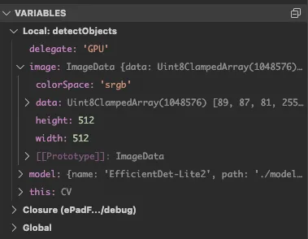
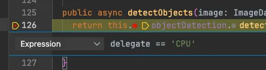
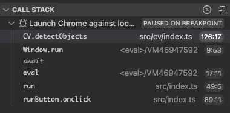
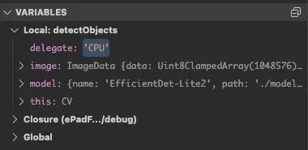

I was sad to learn of Niklaus Wirth’s death on New Year’s Day. In college, I used Modula-2, Pascal, and Delphi, and my love of coding may have been very different without Wirth’s contributions. May he rest in peace.
As I was reminiscing about languages and tools I used to use, I recalled how much time I spent in the debugger. I was always using the debugger. It was the primary tool to learn new code, understand why my code wasn’t working, and ultimately figure out how to fix it.
When I speak to developers today, however, especially those earlier in their career, using a debugger seems to be a lost art.
As an example, I was recently working with one of our developers, helping diagnose why their build was taking so long. I couldn’t help but notice they were sprinkling console.log() statements throughout their code to figure out whether a line had been reached and the value of a variable in scope.
When I asked, “Why don’t you use the debugger?” there were several reasons. Some were valid, others were myths, and many were related to their setup, but all had turned this engineer off the idea.
And this developer is not alone. In a recent thread on Hacker News titled, “Why are we not using debuggers more?”, I found it fascinating to see the polarization of opinions in the comments.
In this article, I’ll expand on this and cover several reasons developers may not be using the debugger. I’ll then share the benefits of using a debugger I’ve seen in my teams and explore the potential connection between debugging and generative AI.
Why don’t developers use a debugger?
“It’s easier not to…” - If you don’t have a debugger setup - or don’t know how to use one - this can be a valid excuse. I’ll admit it. It’s super easy to insert a console.log statement and re-run your code.
“Setting up the debugger is too complex…” - Depending on your development environment, getting a working debugger can take effort. It might require creating a new runtime configuration, generating source maps, or installing specific libraries.
“The debugger never works for me…” - Even when a debugger is available, sometimes it just doesn’t work. Maybe it doesn’t break when you thought it should have. Or maybe it breaks, but on a completely different line.
“I don’t know how to use it with my type of application…” - For Web applications, it’s difficult to debug both the server and browser. For distributed applications, it’s challenging to attach a debugger to a remotely-running container.
“I was told that using a debugger is much slower…” - Debugging an application will always be slower than running without debugging. And who wants a slower development machine?
How do we solve for these? I believe the above highlights the friction - or perceived friction - of using a debugger. I also believe that if more developers knew the advantages of using a debugger, more would invest the time to overcome the friction of using one.
To start down this path, let’s look at some advantages of using a debugger:
Why use a debugger?
Inspections and evaluations
As you probably know, debuggers enable you to inspect the value of any variable when a breakpoint is reached.
For example, in this computer vision application, I can use the debugger to inspect the value of the delegate, image, and model variables when the detectObjects function is called.

Many IDEs also support “inline views”, where the editor displays the values of variables in scope alongside each line of code. This can be useful for quickly seeing simple values at runtime, although you still need the inspector for complex objects.
Finally, most IDEs also support the evaluation of expressions at runtime. This can help support a more complex inspection or to view the output from a function.
Why is this better than console.log?
First, you don’t have to write any console.log statements! (And then remove them, especially after you’ve pushed your commit!)
More importantly, not only does a debugger show the values of variables at runtime, but it also provides the context of what else is in scope.
On many occasions, I’ve used a debugger and discovered a value or method that was available in a module or class - one that I hadn’t realized existed: “Wow! I didn’t realize the cv object contains the list of devices - now I don’t need to pass them separately.”
Dynamic breakpoints
As well as breakpoints that stop when the line of code is reached, debuggers also support dynamic breakpoints. These include “break on exception”, which will pause the debugger if an uncaught exception is raised, and conditional breakpoints.
Using a conditional breakpoint, the debugger stops only when an expression evaluates to true.

For example, let’s imagine I was experiencing an issue when my computer vision model was running on the CPU instead of the GPU. Using a conditional breakpoint, the debugger only breaks when the passed delegate variable is set to “CPU”. This enables me to ignore all the other times that the GPU was being used.
Why is this better than console.log?
Breaking on exception is very efficient - way more so than just logging the exception to stdout. The debugger pauses and provides all the context needed to diagnose the issue.
The alternative - using console.log - requires finding the exception in the logs, tracing which line caused it, inserting a console.log to write some additional values, and re-running your program (likely many times over).
Conditional breakpoints are equally productive, especially for edge cases. You can use these breakpoints to trap known values, such as the delegate variable in the last example, and unexpected ones - for example, stopping when a passed object is null/undefined.
Walking the call stack
When a debugger hits a breakpoint, besides variables, you have access to the call stack. The call stack is the sequence of calls that was made between starting the program and the current line of code being executed.

As shown above, in our computer vision example, the debugger has paused on a breakpoint. It’s now easy to trace the call stack - all the way from the user clicking the run button (the onclick function at the bottom of the stack) through to the detectObjects method being called in the cv library.
Why is this better than console.log?
Not only does the call stack give you visibility you wouldn’t get with a console.log statement, but it can be really useful for learning unfamiliar code.
Especially when I’ve run a project for the first time, the call stack provides insight into the dependencies between parts of the system. Over time, this helps me create a mental model of how everything fits together: “Oh wow, I didn’t realize that module x got called by module y.”
Setting values
Debuggers allow you to inspect values, but you may not know that you can set values at runtime as well. This is one of my favorite features, as you can change a value and often reduce the time to see the impact.

In the above example, I can right click on the delegate variable, manually set the value to ‘CPU’. After continuing execution, this will force the model to run on the CPU.
Why is this better than console.log?
I’ve often used this for a couple of scenarios. The first is to test error conditions and handling. For example, imagine a user has reported that the page crashes if they try to create an account with a username longer than 16 characters. It’s trivial to set a breakpoint, set the value of username to something longer than 16 characters, and then step through to diagnose the offending code.
I’ve also used this approach to jump quickly to other parts of the application. For example, set a manual breakpoint, change the value of level to 20, and resume the debugger.
Integrating with AI coding assistants
You may have used an AI coding assistant (e.g., GitHub Copilot) to help with generating code. I believe that integrating coding assistants with the debugger will take this one step further.
As we’ve seen in previous sections, when a debugger reaches a breakpoint, it has a lot of context about the running application. This includes the current code being executed, all the variables in scope, any exceptions, and the call stack.
This context is incredibly useful if sent to an LLM. In the case of an unhandled exception, the exception and all the context leading up to the exception can be fed to the LLM. This is a lot more powerful than just copying and pasting a generic exception message into ChatGPT.
I believe we’ll see more advanced use cases of the debugging context working hand-in-hand with an LLM. These may include providing other optimizations, such as recommending shorter call paths or eliminating redundancies.
This is a nascent area, with some of this functionality taking shape in the early adopter builds of GitHub Copilot. If you’d like to find out more, I recommend watching Session BRK231H from Microsoft’s Ignite conference in 2023. Fast forward to the 25 minute mark, where Mark Downie shows a development version of Copilot chat working alongside the debugger to diagnose an unhandled exception in his C# code.
What Now?
If you haven’t used a debugger before - or if you’ve been frustrated - I hope this article has convinced you it’s worth another try. If so, I’d recommend three next steps:
Get your environment working
Most importantly, I recommend setting aside time to set up your own development environment to support debugging. This may involve installing some additional libraries or tools - for example, installing the debug gem in a Ruby environment. To enable debugging for JavaScript and TypeScript environments, you will also need to generate source maps in your build process.
I’ve also found it useful to get into the habit of configuring my IDE to run the debugger by default. (To do this, you can create a single debug configuration - or, if that’s not possible, replace your keyboard shortcut for running the project to debugging instead).
By doing this, you’ll always have access to the debugger at runtime. When things aren’t working, it’s then easy to set a breakpoint and inspect the code vs. having to adjust your thinking to restarting the application with a debugger attached. (And if you are worried that your program will always be stopping, most IDEs support a “mute all breakpoints” option.)
One additional side effect is if you do set the debugger as the default target, you’ll likely dispel the myth that debugging is slow on today’s modern machines.
Become a evangelist for using the debugger in your own team
Once you have your environment working, one of our principal engineers at Code.org recommends becoming an evangelist in your own team. As he puts it, “don’t just enable the debugger for yourself, enable it for your teammates.”
This can be as simple as sharing, committing, and maintaining the IDE configuration harnesses that enable one-click debugging for your project.
Explore remote debugging
As you master your own development environment, I’ve encouraged my teams to go on and understand how remote debugging works, especially for those working on distributed applications.
This involves understanding the protocols behind remote debugging, such as GDB Remote Serial Protocol, Chrome DevTools Protocol, and Java Debug Wire Protocol, among others.
If you are interested in diving deeper here, I’d recommend Practical Debugging at Scale [Almog], especially if you are running Java-based applications on Kubernetes.
Conclusion
In this article, we’ve covered many of the challenges developers face with debugging and re-introduced several benefits of using a debugger: inspections and evaluations, dynamic breakpoints, walking the call stack, setting values, and integrating with AI coding assistants.
If you are new to using a debugger (or were just afraid to ask) I hope this has provided some ideas for exploring more. If you are a developer who was already using a debugger, I hope you’ll continue to evangelize the benefits before it truly becomes a lost art!